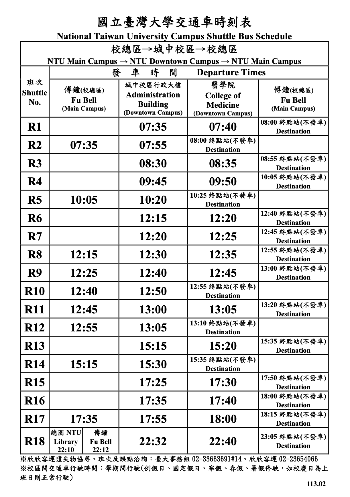

想快樂的在城中國生活的話！就認真看學長姐們用心寫的生活指南ㄅ(^o^)/
問：要怎麼來回總區及城中？
答：
- 學校的校車：大部分的人都會選這個，因為不用錢又直接送你到目的地。校總區出發點為傅鐘，終點為校門口、傅鐘以及綜合教學館，醫學院站點有醫學院門口、醫體排球場以及社科院這幾個停靠站。但校車班次沒有很多，有時候會跟課表對不太上，可以參考※註一：校車時刻表※。
- 公車：總區公車站為捷運公館站(去程近三號出口，回程近一號出口)&城中公車站為仁愛林森路口(近臺大醫院)/開南中學(水森館前面，公衛大樓斜後方)。總時長約30分鐘，視車況會增加到1個小時不等。最主要的公車為208(來回都有)(離峰每15-20分鐘一班)或671(只有回) (離峰每15-20分鐘一班)
- 捷運：校總區的捷運站是公館(綠線)，城中附近有兩個捷運站，台大醫院(紅線)或是善導寺(藍線)，善導寺離公衛比較近只要直走7分鐘左右就會到了，台大醫院站出來要越過整個台大醫院舊址以及新址總時長差不多15分鐘，但如果把搭捷運的時間算在一起的話會是差不多的。總時長約25分鐘。
- 機車：最快且最方便的選項，機車永遠是您最方便的選擇。如果趕時間的話，直走到仁愛路待轉，因為是單行道所以待轉區要看清楚，直走看到林森南路右轉就到了，總時長差不多10-15分鐘。只是台北交通真的很亂，而且車很多很危險，如果不是常騎的盡量不要騎。
- 腳踏車：其實也很方便，如果想要運動增加肺活量跟體力的可以騎看看，總時長約20分鐘。
問：城中美食沙漠有什麼好吃的嗎？
答：
以下分地區介紹食物
- 近又方便的醫院微風地下街：萌太利印尼風味料理、老董牛肉麵、小南門豆花、龜記、星巴克、21plus、Mister Donut，這些應該不用我介紹，想跟你們說的其實是，學生證有員工價打九折，很爽，但其實算下來還是不便宜，要考量自己的錢包到底夠不夠深。
- 善導寺附近：麥當勞、50嵐、給力盒子(健康餐真的超好吃)、溫州大餛飩、皇家黃牛肉麵、東京醬油拉麵、sukiya，還有巷子裡有水煎包跟雞排，都很便宜而且又很好吃，這裡東西真的很多，如果順路的話可以來這邊吃。
- 醫體旁邊我們俗稱麵街：東峰西瓜汁(沒喝過不要說你讀過醫學院)(我都喝綠豆沙牛奶，那真的超級好喝，不喝一天會想死)、龍門客棧(小貴，但超頂)、藍香小吃(鹽酥雞排飯超級好吃)、還有其他各種麵，這裡超級多美食等你來發掘，只要上課時段就會看到各個年級的學長姐在這裡徘徊覓食。
- 其實城中離北車很近，或甚至可以去西門吃，這些地方的食物就不用我介紹了。唯一的缺點就是要走一小點路，不過其實散步去吃飯還蠻浪漫的(？)
- 學餐的部分有男二自助餐跟醫學院二樓不知道叫什麼名字的餐廳，又便宜又好吃，還可以吃得很飽，只是缺點是又餐時段都超級多人，如果趕時間的話不要來。
問：城中有Ubike嗎？
答：
當然是有的喔！在醫體外面、徐州路與紹興南街口附近都有站點，不用怕沒地方還腳踏車。善導寺3號出口外以及台大醫院站3號出口外也有設了2.0，不想走路也可以騎腳踏車代步。
問：有圖書館或自習室可以念書嗎？
答：
神聖的知識殿堂怎麼可能沒有圖書館呢！我們的醫圖真的很漂亮又有很多設施，醫圖不只可以唸書，還有樂活室可以看電影，借Switch來玩，還有很多地方可以睡覺，四樓的冷氣來很涼，資源非常豐富，可以好好利用一番。自習室位在醫學院的四樓，要從醫圖門口對面的旋轉樓梯爬上四樓，那裡還有影印機可以印實驗報告，使用方法就跟總區的計中一樣。不喜歡自習室的話，每層樓都有一區舒服的陽光走廊，可以邊看風景邊念書，或是單純去睡個覺。想睡覺的話也可以去每一層樓的醫療區有很多沙發可以睡，但午休時間都超級多人，但這裡根本天堂
問：Y17青年育樂中心是什麼？
答：
總之這是個很棒的地方，有練團室、練鼓室、各種室，我也還沒摸透他，有興趣的人可以去研究一下。
問：有地方可以運動嗎？
答：
醫體在平日的早上跟下午都是開放的，只要刷學生證就可以進去。中午要離開會有付錢的人來趕我們走，醫體裡面可以用學生證借球，裡面的排球是mikasa的皮球，真的超好。外面有兩個有天網的排球場(很爛的設計)，網高會比較低，介於男網與女網之間，旁邊有籃球場以及網球場，都是不用借的直接去用就可以了。
※註一：校車時刻表※ 